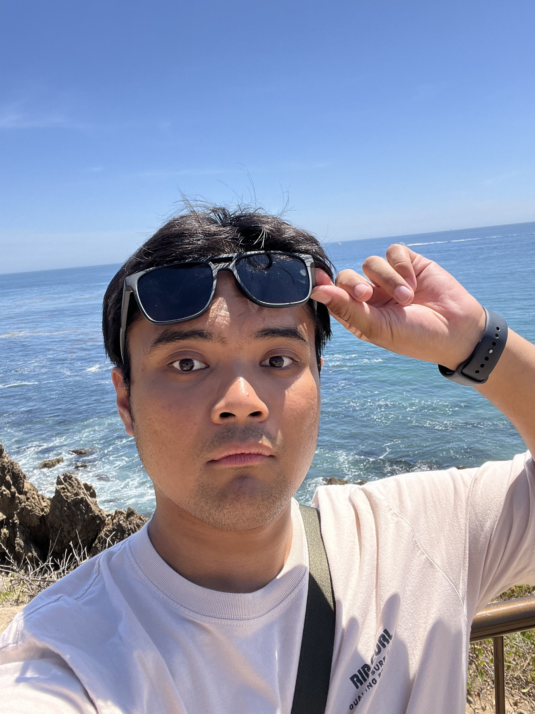
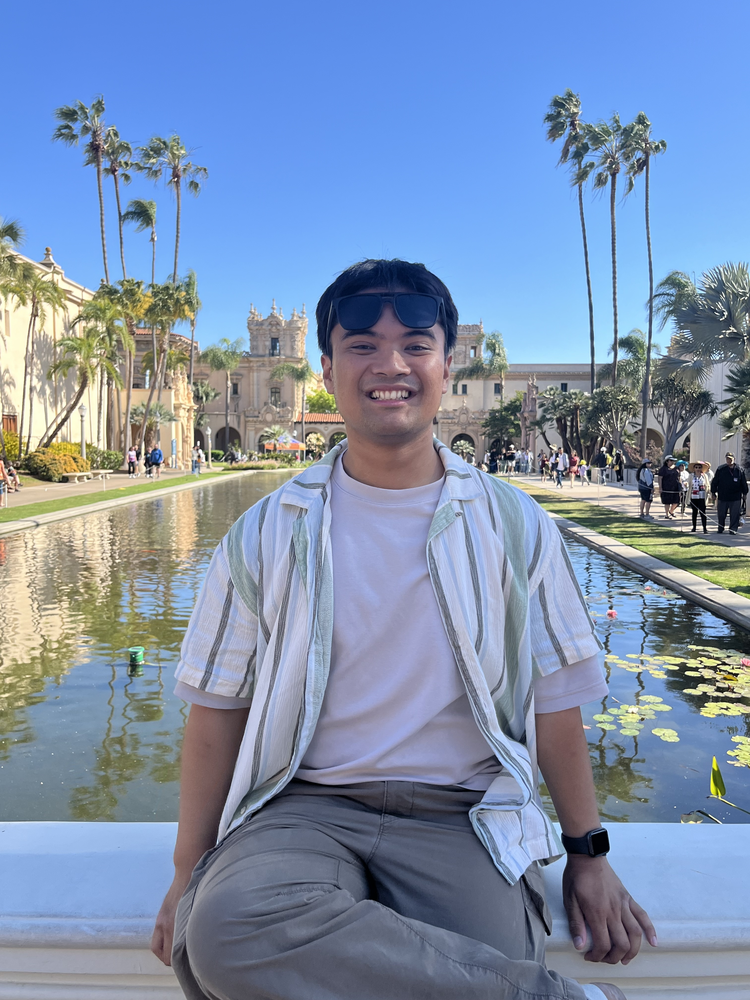

About Me
So... you want to know more about me?
This is me.

This is me.


Personal Background
My name is Phillipe (pronounced "fil-LEP") or you can call me Phil.
I am a Southern California native, born and raised around Los Angeles as well as Orange County, and currently residing in the Inland Empire.
I am of Filipino heritage and take great pride of my culture and identity.
I believe my family has helped me foster an early interest in technology. My interest in Computer Science and software engineering first started when I was only 4-years old. My father works in IT, so I was able to get my hands on a computer which helped me obtain an early understanding of PCs at a young age, and my older sister owned a Nintendo Gamecube.
One of my sister's games was Super Monkey Ball and I was fascinated by the game's mechanics. Just the idea alone that pushing your joystick up, communicates an input that causes the monkey on my TV screen to roll forward in a ball was astonishing to me as a kid.From there, I was intriuged on technology and video games, and I wanted to learn the "behind-the-scenes" of how these things worked. As of today, I forever acknowledge that experience as my defining moment that led me to pursue a career in Software Engineering.
I believe my family has helped me foster an early interest in technology. My interest in Computer Science and software engineering first started when I was only 4-years old. My father works in IT, so I was able to get my hands on a computer which helped me obtain an early understanding of PCs at a young age, and my older sister owned a Nintendo Gamecube.
One of my sister's games was Super Monkey Ball and I was fascinated by the game's mechanics. Just the idea alone that pushing your joystick up, communicates an input that causes the monkey on my TV screen to roll forward in a ball was astonishing to me as a kid.From there, I was intriuged on technology and video games, and I wanted to learn the "behind-the-scenes" of how these things worked. As of today, I forever acknowledge that experience as my defining moment that led me to pursue a career in Software Engineering.

Education 🎓
University of California, Irvine
Bachelor of Science, Computer Science
September 2023 - June 2025
Irvine, California
Activities:
FUSION at UCI, FUSION ICS Project, Kababayan at UCI, Men's Intramural Volleyball (Fall 2023)
Coursework:
Programming in C++, Programming in Java, Data Structures Analysis & Implementation, Design & Analysis of Algorithms,
Introduction to Database Management, Project in Databases and Web Applications, Human-Computer Interaction, Principles in System Design,
Introducton to Artificial Intelligence, Machine Learning & Data Mining, Introduction to Software Engineering, Software Testing & Quality Assurance
Introduction to Database Management, Project in Databases and Web Applications, Human-Computer Interaction, Principles in System Design,
Introducton to Artificial Intelligence, Machine Learning & Data Mining, Introduction to Software Engineering, Software Testing & Quality Assurance

When I was an undergraduate at UC Irvine, I enrolled in academically rigorous and theory-heavy Computer Science courses that
challenged my problem-solving skills, mental fortitude, adapatability, and collaboration effort(s). Despite the difficulty of nature
in such academia, it is no doubt that these experiences have shaped my intrigue in Software Engineering and provided me a glimpse of the industry.
I was also a member of FUSION at UCI, a Filipinx student organization that aims to empower, connect, and represent Filipinx students pursuing STEM in the UCI community. Through this organization, I was involved in the FUSION ICS (Information & Computer Sciences) Project, where I collaborated with fellow members to develop a web application that represents the five pillars of FUSION: Social Support, Professionalism, Academia, Culture, and Engineering. Feel free to click on the Projects tab to learn more about thisproject and others that I've worked on!
During my free time, I would usually cook in my apartment, play video games, do spontaneous Costco trips, or hang out with friends at local spots around Irvine as well as exploring Orange County. Some favorite spots of mine include Hironori Craft Ramen, Da Vien Coffee, and Seaside Donuts at 3 AM with my friends! Click on the Misc. tab to learn more fun facts about me!
I was also a member of FUSION at UCI, a Filipinx student organization that aims to empower, connect, and represent Filipinx students pursuing STEM in the UCI community. Through this organization, I was involved in the FUSION ICS (Information & Computer Sciences) Project, where I collaborated with fellow members to develop a web application that represents the five pillars of FUSION: Social Support, Professionalism, Academia, Culture, and Engineering. Feel free to click on the Projects tab to learn more about thisproject and others that I've worked on!
During my free time, I would usually cook in my apartment, play video games, do spontaneous Costco trips, or hang out with friends at local spots around Irvine as well as exploring Orange County. Some favorite spots of mine include Hironori Craft Ramen, Da Vien Coffee, and Seaside Donuts at 3 AM with my friends! Click on the Misc. tab to learn more fun facts about me!
Fullerton College
Associate of Arts, Interdisciplinary Studies in Science & Math
August 2021 - May 2023
Fullerton, California
Activities:
Honors Program (STEM Honors Certified), UCI Honors to Honors Partnership
Relevant Coursework:
Programming in C++, Data Structures & Algorithms, Discrete Mathematics, Linear Algebra & Graph Theory, Calculus I, Calculus II
I attended Fullerton College for two years to fufill my general education requirements and complete my lower-division Computer Science coursework. During my time
at Fullerton College, I was a member of the STEM Honors Program and was able to transfer to UC Irvine with Honors Certification. As they say, "Once a Hornet, always a Hornet!" 🐝